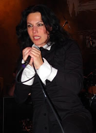
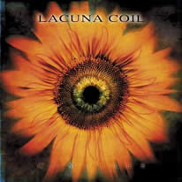

Entrevista de Cristina Scabbia à Bruna Soares - Novembro de 2002
Olá, Cristina! Estamos próximos da data de lançamento do Comalies, o quarto álbum da banda Lacuna Coil. Quais são as suas impressões sobre este novo trabalho? Do Primeiro EP para o Comalies nós ganhamos maturidade e profissionalismo. Agora nós estamos muito mais confiantes com as performances ao vivo, gravações e as letras das músicas amadureceram bastante. Agora nós somos capazes de escrever boa música, evitando sobrecarga de instrumentos. Provavelmente isto é devido à sofisticação. Às vezes é melhor ir direto ao ponto, sendo bastante simples, mas tendo um grande cuidado com cada detalhe.
No site oficial da banda, você afirmou que o estilo do Lacuna Coil progrediu, tornando-se mais variável e mais reconhecível ao mesmo tempo. Você acha que as mudanças neste novo CD irão agradar os velhos e novos fãs da banda? O que mudou essencialmente? Os fãs que já escutaram o novo álbum amaram! Quando nós dissemos que progredimos, significa que o som é muito melhor, mais intenso, mais pesado do que antes. Eu estou certa, totalmente certa de que as pessoas não irão se desapontar com o Comalies.
Qual o significado da palavra Comalies? A palavra Comalies representa a escuridão que nos cercava durante a composição das músicas. Nós estávamos compondo em uma outra dimensão, completamente inundados na música, esquecendo todas as outras coisas ao nosso redor. Ninguém poderia entrar nesta dimensão, além de nós. Nós estávamos trancados num tipo de coma, e foi por isso que quando nós tínhamos que escolher o título do álbum, nós voltamos no tempo e lembramos daquela atmosfera misteriosa. Depois de achar "coma" uma palavra para o título, nós decidimos brincar mais com as palavras e nós escolhemos Comalies, uma espécie de trocadilho com a palavra "Comalized" (em coma) pela música.
A turnê do Comalies será feita em que países? Na Inglaterra, França, Escandinávia, Itália, Alemanha, Espa-nha... Mas isto é somente a primeira e a primeira européia; nós vamos tocar também nos Estados Unidos em janeiro e fevereiro de 2003.
Existe algum plano de gravar um videoclipe de alguma música do novo álbum? Se existe, a escolha da música é feita pelos membros da banda ou pela Century Media? Nós fizemos um Making off do Comalies. Por enquanto nós ainda preferimos investir em turnês. Desta maneira nós podemos fazer uma maior promoção da banda e dos álbuns. Em um futuro próximo nós iremos fazer um vídeo, mas eu ainda não sei quando.
Algumas bandas como o Nevermore estão em constante atrito com a gravadora Century Media. Qual o relacionamento do Lacuna Coil com a gravadora? Muito boa. Eles oferecem uma excelente promoção para nós e acreditam fortemente em nosso potencial.
A capa do Comalies foi recentemente divulgada pela Century Media, apresentando uma bela flor no centro. Qual a relação entre a capa e a temática de álbum? O girassol é uma figura simples, muito fácil de ser lembrada. O girassol é como nós, que estamos sempre seguindo o sol e sendo positivos. A figura também remete fortemente a forma do sol em Unleashed Memories. Simples, intenso.
Uma curiosidade: O artefato de metal que ilustra a capa de Unleashed Memories é uma representação da Distant Sun? Quem normalmente tem as idéias para a parte gráfica do álbum? Não é o Distant Sun, mas um espelho mexicano com a forma de um sol. Nós decidimos todos juntos a combinação de formas e cores, mas isso não é ligado ao Distant Sun.
A primeira demo lançada pelo Lacuna Coil (ainda sob o nome Ethereal) continha 2 músicas, Shallow End e Frozen Feeling. A primeira está disponível no site oficial da banda, sendo uma curiosidade agradável aos fãs, mostrando um Lacuna Coil com sonoridade crua e com maior influência de Doom Metal. Existem planos de lançar a música Frozen Feeling no futuro, em algum single por exemplo? Não no momento. Eu não acho que isso será reprisado. É muito velho e nós estamos muito mais concentrados no novo material.
Ainda sobre a demo; a mudança de estilo Ethereal/Lacuna Coil EP, foi uma escolha do grupo ou surgiu naturalmente? Nada acontece no Lacuna Coil que não seja de um jeito natural.
Apesar de considerar Andrea um ótimo vocalista, surgiu alguns boatos de que ele fez aulas de canto recentemente. Isto é verdade? Como estão seus vocais no Comalies? É uma vergonha ter aulas de canto? Mesmo eu não fazendo (isso sim é uma vergonha) eu acho que todos os cantores deveriam fazer. Andrea melhorou muito e vocês podem realmente ouvir isso no Comalies, ele praticou muito.
Extraída de www.lacunacoil.hpg.com.br
|